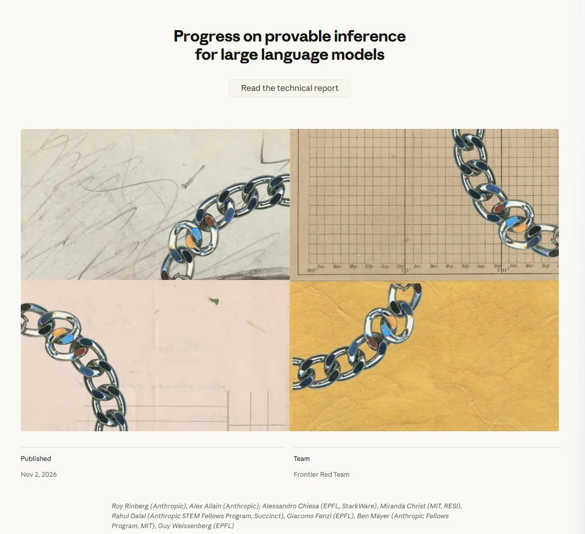

AI och tech
Delvis obekräftatAnthropic släpper FlashProve – kryptografiskt bevis för vilken AI-modell som faktiskt svarade

Anthropics säkerhetsgrupp Frontier Red Team har släppt FlashProve, en forskningsprototyp som med så kallade nollkunskapsbevis kan visa att ett svar verkligen kom från en viss språkmodell, utan att modellens vikter behöver lämnas ut. Koden är öppen och testad på en stor öppen modell med 400 miljarder parametrar. Idén väcker stort intresse på X eftersom den skulle kunna stoppa mellanhänder som i smyg byter ut en dyr modell mot en billigare, men tekniken är fortfarande långt dyrare än vanlig körning.
Den som köper tillgång till en AI-modell via ett API, alltså ett programgränssnitt, kan i dag inte veta säkert vilken modell som faktiskt svarar. En återförsäljare eller mellanhand kan i princip ta betalt för en stor, dyr modell och i stället köra en mindre och billigare. Det problemet vill Anthropic ta itu med. Bolagets säkerhetsgrupp Frontier Red Team har släppt FlashProve, ett verktyg som tar fram ett kryptografiskt bevis för att ett visst svar kom från en viss uppsättning modellvikter, utan att vikterna själva lämnas ut. Anthropic-ingenjören Steve Weis delade både koden och blogginlägget på X.
Enligt skärmbilden av Anthropics blogginlägg, som 100y på analysföretaget Four Pillars lade ut, publicerades arbetet den 2 november under rubriken "Progress on provable inference for large language models". Bakom det står forskare från Anthropic tillsammans med bland andra kryptografer från EPFL i Schweiz, MIT och StarkWare. Koden släpps under den fria licensen Apache 2.0.
Testad på en jättemodell
Det tekniska grundgreppet är så kallade zkSNARK-bevis, en sorts nollkunskapsbevis som gör det möjligt att bevisa att en beräkning gjorts rätt utan att visa alla ingående data. Enligt genomgångar på X, bland andra från james_ios och Srinivas Valekar, har FlashProve provats på Metas öppna modell Llama 4 Maverick, som har omkring 400 miljarder parametrar, i en komprimerad fyrbitarsversion. Bevisen tas fram i ungefär 110 token per sekund på ett enda H100-grafikkort, men kräver 70 till 95 gånger mer GPU-tid än att bara köra modellen som vanligt.
Att kontrollera ett färdigt bevis går däremot snabbt: en vanlig processor och omkring 17 sekunder ska räcka. Flera inlägg nämner också att konstruktionen är formellt verifierad med bevisverktyget Lean, vilket ska minska risken för fel i själva matematiken.
Begränsningarna
Alla är inte lika imponerade av hastigheten. Den franska AI-tidskriften Le Latent skriver att kodförrådet självt anger 39 token per sekund för hela svar, och att svar från vanliga körmiljöer som vLLM inte godkänns, eftersom beviset kräver att modellen körs på ett särskilt sätt. Den spanskspråkiga sajten Pulso IA påpekar att verktyget bara kan bevisa att en hel, publicerad version av vikterna användes och att ett bestämt sätt att välja varje ord följdes. Det säger alltså inget om till exempel vilka instruktioner modellen fått.
Kostnaden är den invändning som återkommer oftast i diskussionen. Så länge ett bevis drar så mycket mer datorkraft än själva svaret är det svårt att se tekniken användas för varje förfrågan. Den italienska techsajten Matrice Digitale är ett av de mer etablerade medier som uppmärksammat släppet.
Intresset på X
Diskussionen har spridit sig långt utanför kryptografikretsar, med inlägg från bland andra FranGibb och me_deepu. Doktoranden Joie Lee vid HKUST noterar att projektet fick omkring 150 stjärnor på GitHub på fyra dagar. Enligt X:s sammanställning ser många FlashProve som ett sätt att skydda kunder mot mellanhänder som byter modell, men än så länge är det en forskningsprototyp och inte en färdig tjänst.
Så vet vi det
Källmix: 11 källor – 1 primärkälla, 1 expert, 3 analys, 2 journalist, 1 etablerad media, 3 debattör. Etablerad media utgör 1 av 11.
- Primärkälla Steve Weis, ingenjör på Anthropic: FlashProve släppt med kod och blogginlägg
- Expert 100y, forskningschef på Four Pillars: genomgång med skärmbild av Anthropics inlägg
- Analys james_ios: genomgång av prestandan
- Analys Srinivas Valekar: genomgång av FlashProve
- Journalist Le Latent, fransk AI-tidskrift: 39 token per sekund för svar och begränsningarna
- Journalist Pulso IA: vad FlashProve kan och inte kan bevisa
- Etablerad media Matrice Digitale, italiensk techsajt: Anthropic släpper FlashProve
- Debattör Joie Lee, doktorand vid HKUST: 150 stjärnor på fyra dagar
- Debattör FranGibb om FlashProve
- Debattör me_deepu om FlashProve
- Analys X:s sammanställning av diskussionen
Att FlashProve släppts som öppen kod av Anthropic bekräftas av en Anthropic-ingenjörs eget inlägg och av skärmbilden av Anthropics blogginlägg. Prestandasiffrorna (cirka 110 token per sekund på ett H100-kort, 70–95 gånger mer GPU-tid än vanlig körning och omkring 17 sekunder för att kontrollera ett bevis) kommer från analytiker och debattörer som läst rapporten; vi har inte själva läst den tekniska rapporten. Den franska tidskriften Le Latent anger en lägre hastighet för hela svar, 39 token per sekund, och siffrorna går alltså isär beroende på vad som mäts. Att verktyget redan har fått 150 stjärnor på GitHub bygger på ett enskilt inlägg.
Fördjupa
Frågorna öppnar Grok i en ny flik med artikeln som underlag. AI-svar kan innehålla fel, så kontrollera mot källorna.
- Vad är ett nollkunskapsbevis, och hur kan man bevisa något utan att visa själva hemligheten? ↗
- Varför skulle en mellanhand vilja byta ut en AI-modell mot en billigare i smyg? ↗
- Hur dyrt är det att ta fram ett bevis jämfört med att bara köra modellen? ↗
- Vad kan FlashProve inte bevisa, till exempel om modellen fått rätt instruktioner? ↗
- Kan tekniken användas på stängda modeller som Claude, eller bara på öppna? ↗
- Varför släpper Anthropic det här som öppen kod? ↗
Läs vidare
Uppdateringslogg
- 16:20 – Artikeln publicerad.